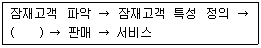
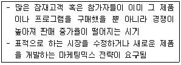
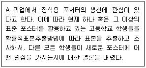
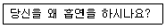
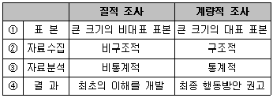
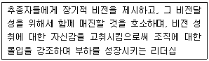
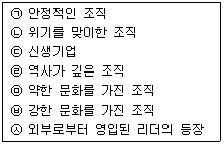
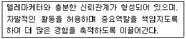
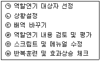
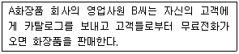

텔레마케팅관리사 (2012-08-26 기출문제)
1과목: 판매관리
1. 발달된 정보기술을 이용하여 다양한 고객 정보를 효과적으로 획득하고 분석하며 신규 고객의 확보보다 이탈 방지, 즉 고객유지에 비중을 두는 마케팅은?
- 게릴라 마케팅
- 데이터베이스 마케팅
- 인다이렉트 마케팅
- 네트워크 마케팅
(정답률: 91%)

2. 데이터마이닝에 대한 설명으로 옳지 않은 것은?
- 데이터마이닝은 데이터웨어하우스를 구축한 후, 정보 분석과정을 거쳐 경영전략을 지원하는 정보를 추출하는 것이다.
- 데이터마이닝은 일종의 데이터분석기법이다.
- 대용량의 고객데이터 분석이 복잡하여 고객데이터의 활용도를 저하시켰다.
- 데이터마이닝은 데이터 변수 간의 통계적인 상관관계 분석이나 시계열분석 등이 이루어지는 다양한 통계 처리과정을 말한다.
(정답률: 86%)
3. 의사결정지원 시스템의 분석 모델에 포함되지 않는 것은?
- 가정 분석(What-if Analysis)
- 민감도 분석(Sensitivity Analysis)
- 목표탐색 분석(Goal-seeking Analysis)
- 자취 분석(Trace Analysis)
(정답률: 74%)
4. 고객의 개인속성 DB에 속하지 않는 것은?
- 연 령
- 주거형태
- 구매의도
- 전화번호
(정답률: 56%)
5. 대부분의 회사들이 대중 마케팅(Mass Marketing)을 지양하고 시장여건의 변화에 따라 도입된 마케팅 전략은?
- 시장세분화
- 표적시장 선정
- 거시적 마케팅
- 미시적 마케팅
(정답률: 37%)
6. 효율적인 인바운드 고객응대를 위해서 실시할 수 있는 방법이 아닌 것은?
- 콜센터(Call Center)의 설치운영
- 채권이수 해결사 고용
- 고객응대창구의 일반화
- 24시간 전화접수 체제 구축
(정답률: 84%)
7. 마케팅정보 시스템의 종류와 가장 관련이 없는 것은?
- 내부정보 시스템
- 차별화 시스템
- 고객정보 시스템
- 마케팅 인텔리전스 시스템
(정답률: 59%)
8. 마케팅관리자가 적용 가능한 마케팅기회를 평가하는 방법으로 가장 적합한 것은?
- 단기적이기보다 장기적인 관점에서 모든 마케팅기회를 평가해야만 한다.
- 계량적(Quantitative)인 기준의 사용을 자제해야 한다.
- 다수의 기회가 존재할 경우 개별적으로 대안들을 평가해야 한다.
- 통제가 가능한 내부자원만을 살펴봐야 한다.
(정답률: 67%)
9. 판매 후 서비스(After Service)는 어느 제품수준에 속하는가?
- 확장제품
- 서비스제품
- 유형제품
- 핵심제품
(정답률: 63%)
10. STP 전략의 절차를 바르게 나열한 것은?
- 표적시장 선정 → 시장세분화 → 포지셔닝
- 시장세분화 → 표적시장 선정 → 포지셔닝
- 포지셔닝 → 표적시장 선정 → 시장세분화
- 시장세분화 → 포지셔닝 → 표적시장 선정
(정답률: 76%)
11. 아웃바운드 텔레마케팅을 통한 판매 전략에도 마케팅믹스가 요구되는데 마케팅믹스에 해당하지 않는 것은?
- 유 통
- 가 격
- 촉 진
- 사 람
(정답률: 84%)
12. 다음은 아웃바운드 텔레마케팅의 일련의 과정을 나타낸 것이다. ( ) 안에 들어 갈 용어로 가장 알맞은 것은?

- 등급화
- 목표시장
- 포지셔닝
- 자 극
(정답률: 49%)
13. 데이터베이스 마케팅의 활용범위로 적합하지 않은 것은?
- 신용카드 고객을 관리하는 데 활용한다.
- 우수고객을 차별관리하는 데 활용한다.
- 연체관리 시스템에 활용한다.
- 회계관리 시스템에 활용한다.
(정답률: 46%)
14. 인바운드 텔레마케팅이 지향하는 목표와 가장 거리가 먼 것은?
- 공격적이며 수익지향적인 마케팅
- 기존고객과의 지속적 관계 유지
- 빈번한 질문에 대한 예상 답변 준비
- 우수고객에 대한 서비스 차별화
(정답률: 75%)
15. 다음 중 재포지셔닝(Repositioning)에 관한 설명으로 틀린 것은?
- 지금까지 유지되어 온 현재의 위치를 버리고 새로운 포지션을 찾아가는 방법이다.
- 경쟁자의 진입으로 시장 내의 차별적 우위 유지가 힘들게 되었을 때 재포지셔닝이 필요하다.
- 기존의 포지션이 진부해져 매력이 상실되었을 경우에 재포지셔닝을 고려한다.
- 소비자의 인식과 기업이 바라는 포지션이 같을 경우 기존의 포지션을 바꿀 필요성이 생길 수 있다.
(정답률: 76%)
16. 무점포 소매의 형태에 해당하지 않는 것은?
- 텔레마케팅
- 방문판매
- 홈쇼핑
- 편의점
(정답률: 80%)
17. A전자에서 세계 최대 크기의 LCD TV를 개발했다는 것이 뉴스를 통해 알려진 경우에 적합한 촉진전략은?
- 광 고
- 홍 보
- 판매촉진
- 인적판매
(정답률: 54%)
18. 가격결정에서 인플레율을 고려한 것으로 계약판매 및 신용판매에서 특히 고려해야 할 기준은?
- 가격 탄력성
- 가격 표시제
- 가격 체인
- 가격 에스컬레이션
(정답률: 42%)
19. 다음 중 80 대 20 법칙과 가장 밀접한 관계를 갖는 시장세분화 변수는?
- 인구 통계적
- 탐색 효익
- 행 동
- 사용량
(정답률: 40%)
20. 마케팅정보 시스템에 관한 설명으로 틀린 것은?
- 마케팅을 보다 효과적으로 수행하기 위하여 관련된 사람, 고객의 정보, 기구 및 절차, 보고서 등을 관리하는 시스템을 말한다.
- 마케팅 경영자의 마케팅 의사결정에 사용할 수 있도록 한 정보관리 시스템이다.
- 기업 내부 자료, 외부 자료와 정보를 체계적으로 관리한다.
- 마케팅정보 시스템은 경영정보 시스템의 상위 시스템이다.
(정답률: 66%)
21. 고객생애가치(Life Time Value)와 가장 관계가 깊은 것은?
- Renewal(갱신)
- CRM(고객관계관리)
- Up-sale(고가 판매)
- Cross-sale(교차 판매)
(정답률: 91%)
22. 가격차별화의 전제조건에 관한 설명으로 틀린 것은?
- 각 시장을 세분할 수 있어야 한다.
- 각 세분시장은 수요탄력성이 달라야 한다.
- 각 세분시장의 소비자군은 같아야 한다.
- 시장세분화의 비용보다 이익이 더 커야 한다.
(정답률: 70%)
23. 가맹점 입장에서의 프랜차이징 유통전략의 장점이 아닌 것은?
- 사업실패 위험을 줄일 수 있다.
- 광고 및 운영상 전문가의 노하우를 전수받을 수 있다.
- 성공적으로 구축된 브랜드명과 사업계획 활용이 가능하다.
- 기업규모의 성장을 위해 외부로부터 자금을 확보할 수 있다.
(정답률: 83%)
24. 자사 브랜드를 명시적 혹은 묵시적으로 타사 브랜드와 비교하는 비교 광고를 함으로써 자사의 브랜드를 부각시키는 포지셔닝 방법은?
- 사용자 포지셔닝
- 가격 포지셔닝
- 경쟁적 포지셔닝
- 이미지 포지셔닝
(정답률: 84%)
25. 다음은 제품의 수명주기 중 어떤 시기를 의미하는가?

- 도입기
- 성장기
- 성숙기
- 쇠퇴기
(정답률: 55%)
2과목: 시장조사
26. 일반적으로 기업에서 수행되는 시장조사의 목적과 가장 거리가 먼 것은?
- 소비자의 특성과 행동을 파악하기 위한 시장조사
- 신제품에 관한 소비자의 반응을 파악하기 위한 조사
- 시장점유율을 파악하기 위한 조사
- 새로운 사업이나 기존사업에 대해 고객에게 새로운 인상을 심어주기 위한 조사
(정답률: 78%)
27. IMF 이전 특정 의류 브랜드 구매액수에 대한 조사와 IMF 이후 특정 의류 브랜드 구매액수에 대한 변화를 분석하고자 한다. 다음 중 어떤 조사 설계 방법이 적절한가?
- 실험 조사방법
- 종단적 조사방법
- 횡단적 조사방법
- 시장 조사방법
(정답률: 55%)
28. 다음 중 신디케이트 조사유형과 가장 거리가 먼 것은?
- 국가 인구 조사
- TV 시청률 조사
- 소비자 패널 조사
- 미디어 조사
(정답률: 67%)
29. 측정도구의 타당도 평가방법에 대한 설명으로 틀린 것은?
- 크론바하 알파값을 산출하여 문항상호 간의 일관성을 측정한다.
- 한 측정치를 기준으로 하여 다른 측정치와의 상관관계를 추정한다.
- 개념타당도는 측정하고자 하는 개념이 실제로 적절하게 측정되었는가를 의미한다.
- 내용타당도는 점수 또는 척도가 일반화하려고 하는 개념을 어느 정도 잘 반영해주는가를 의미한다.
(정답률: 50%)
30. 다음 중 개방형 질문의 장점이 아닌 것은?
- 응답 가능한 모든 응답의 범주를 모를 때 적합하다.
- 응답자가 어떻게 응답하는가를 탐색적으로 살펴보고자 할 때 적합하다.
- 개인의 사생활이나 소득수준과 같이 밝히기를 꺼려하는 민감한 주제에 보다 적합하다.
- 몇 개의 범주로 압축시킬 수 없을 정도로 쟁점이 복합적일 때 적합하다.
(정답률: 77%)
31. 우편조사의 응답률에 영향을 미치는 요인과 가장 거리가 먼 것은?
- 응답집단의 동질성
- 응답자의 지역적 범위
- 질문지의 양식 및 우송방법
- 연구 주관기관 및 지원 단체의 성격
(정답률: 60%)
32. 다음 설명과 가장 관계가 있는 것은?

- 민감성 분석
- 단일 정보원
- 통계적 추론
- 기준 표본추출
(정답률: 50%)
33. 측정오차의 발생원인과 가장 거리가 먼 것은?
- 통계분석기법
- 측정시점의 환경요인
- 측정방법 자체의 문제
- 측정시점에 따른 측정대상자의 변화
(정답률: 64%)
34. 다음은 설문지에 작성된 질문내용이다. 이러한 질문이 해당하는 질문유형은?

- 리커트 척도
- 어의차이 척도
- 폐쇄형 질문
- 개방형 질문
(정답률: 93%)
35. 모집단 내의 서로 겹치거나 중복되지 않는 요소들의 집합을 표본단위라 한다. 표본단위를 전화번호부와 같이 기록한 리스트를 무엇이라고 하는가?
- 요 소
- 표본체계
- 체크리스트
- 표 본
(정답률: 59%)
36. 시장조사 자료수집을 위한 설문지의 질문 및 응답에 사용되는 용어 결정시 조사자가 유의할 사항으로 옳지 않은 것은?
- 응답자들이 전문용어를 이해할 것으로 가정해서는 안 된다.
- 한 질문에 두 가지 내용을 질문하지 않는다.
- 정보의 정확성을 위해 대답하기 곤란한 질문을 간접적으로 물어서는 안 된다.
- 유도하는 질문을 하지 않아야 한다.
(정답률: 62%)
37. 측정의 신뢰도와 타당도에 관한 설명으로 틀린 것은?
- 타당도는 측정하고자 하는 개념이나 속성을 정확히 측정하였는가의 정도를 의미한다.
- 신뢰도는 측정치와 실제치가 얼마나 일관성이 있는지를 나타내는 정도이다.
- 타당성이 있는 측정은 항상 신뢰성이 있으며, 신뢰성이 없는 측정은 타당도가 보장되지 않는다.
- 타당도 측정시 외적 타당도만 중심으로 해야 한다.
(정답률: 82%)
38. 질적 조사와 계량적 조사의 비교가 잘못된 것은?

- ①
- ②
- ③
- ④
(정답률: 52%)
39. 독립이나 신규 사업을 생각하고 있을 때 오픈데이터 수집만으로도 분석 가능한 것은?
- 성장분야·업계와 시장규모
- 특정기업의 소속업계 구조
- 특정기업의 경영내용
- 특정상권의 입지조사
(정답률: 79%)
40. 설문지 작성의 원칙과 거리가 먼 것은?
- 직접적, 간접적 질문을 혼용하여 작성한다.
- 조사목적 이외에도 기타 문항을 삽입하여 응답자를 지루하지 않게 배려한다.
- 편견 또는 편의가 발생하지 않도록 작성한다.
- 유도질문을 피하고 객관적인 시각에서 문항을 작성한다.
(정답률: 78%)
41. 장난감 회사에서는 얼마나 많은 장난감을 바꾸거나 개선할 필요가 있는지를 알아보기 위해 실제 어린이들이 장난감을 가지고 노는 것을 살펴본다고 한다. 이러한 방법으로 수집된 자료를 무엇이라 하는가?
- 관찰 자료
- 설문지 자료
- 인터뷰 자료
- 인구통계적 자료
(정답률: 82%)
42. 다음 중 탐색조사의 종류에 해당하지 않는 것은?
- 종단조사
- 경험조사
- 사례조사
- 문헌조사
(정답률: 63%)
43. 다음 중 기업 내부 자료에 포함되지 않는 2차 자료는?
- 회계 자료
- 조직 현황
- 경제 신문사 자료
- 영업 자료
(정답률: 83%)
44. 전화 시장조사의 장점으로 가장 옳은 것은?
- 전화번호 미등재 비중이 높아 비효율성을 초래한다.
- 모집단이 불완전하기 쉽다.
- 육안으로 관찰하기 어렵다.
- 시간과 비용을 절약한다.
(정답률: 87%)
45. 조사대상이 표본으로 추출될 확률이 알려져 있지 않아 인위적인 표본추출을 해야 하는 경우 시간과 비용의 절감 효과는 있으나 표본 오차의 추정이 불가능한 표본추출법은?
- 비확률표본추출법
- 확률표본추출법
- 층화표본추출
- 군집표본추출
(정답률: 80%)
46. 개인의 사생활 보호 및 면접조사가 어려울 때 실시할 수 있는 조사방법으로 가장 적합한 것은?
- 우편으로 질문지를 배포하고 전화로 조사한다.
- 조사원을 이용하여 질문지를 배포하고 전화로 조사한다.
- 조사원을 이용하여 질문지를 배포하고 우편으로 회수한다.
- 조사대상자들을 한 자리에 모아 질문지를 배포하고 전화로 조사한다.
(정답률: 83%)
47. 일반적으로 설문지에서 인구통계학적 변수는 어디에 위치하는 것이 좋은가?
- 설문지의 맨 앞부분
- 설문지의 맨 뒷부분
- 설문지의 중간부분
- 설문지 내용상 지루한 항목과 함께
(정답률: 56%)
48. 우편조사의 단점으로 거리가 먼 것은?
- 질문에 대한 답변 회수율이 저조하다.
- 상세한 보기나 내용을 관찰하기 어렵다.
- 조사자의 통제나 조정이 불가능하다.
- 사전조사 대상자가 극히 한정적이다.
(정답률: 38%)
49. 표본추출과정이나 표본크기와 무관하게 발생하는 표본프레임오류는 불완전한 표본프레임을 변형시켜 줄일 수 있는데 전화조사에서 전화번호에 고정된 정수를 포함하여 표본으로 선택하는 방법은?
- Random-Digit Dialing
- Plus-One Dialing
- Voice Activated Dialing
- Dialing Complete Rate
(정답률: 35%)
50. 모집단으로부터 이를 대표할 수 있는 부분을 선택하는 과정을 무엇이라고 하는가?
- 가설의 설정
- 표본추출
- 설문지조사
- 실험조사
(정답률: 79%)
3과목: 텔레마케팅관리
51. 인바운드 텔레마케팅을 위해 활용되는 WFMS 시스템의 기능이 아닌 것은?
- 콜 수요 예측을 할 수 있다.
- 스케줄링에 필요한 정보를 제공한다.
- 콜센터 시스템 증설 예측기능을 갖고 있다.
- 업무별 특성에 맞는 상담원에게 콜을 라우팅하는 기능을 갖고 있다.
(정답률: 40%)
52. 콜센터 리더가 갖추어야 할 주요 자질로 가장 거리가 먼 것은?
- 경험적 리더십
- 평가진단 및 조직 재설계능력
- 고객에게 친밀한 목소리
- 학습적 리더십
(정답률: 49%)
53. 사전에 준비를 철저히 하여 고객과의 대화 방식을 맨투맨으로 실제적으로 연습하는 것으로, 상담원이 무의식적으로 사용하는 나쁜 말이나 주의점을 찾아내 상황 대응능력을 제고할 수 있고, 상담 실무 적응력을 높이는 데 사용되는 훈련방법은?
- Q&A
- 데이터시트
- 스크립트
- 역할연기
(정답률: 76%)
54. 콜센터의 인력 계획시 전략적으로 선택해야 할 요소로 거리가 먼 것은?
- 인력계획의 방법
- 조직전략과의 연계성
- 인력계획의 폭
- 인력계획의 홍보
(정답률: 45%)
55. 다음은 어떤 리더십에 관한 설명인가?

- 거래적 리더십
- 변혁적 리더십
- 전략적 리더십
- 자율적 리더십
(정답률: 46%)
56. 다음 중 기업문화를 효과적으로 변화시키기 위한 조건을 모두 선택한 것은?

- (ㄱ), (ㄷ), (ㅁ)
- (ㄴ), (ㄹ), (ㅁ)
- (ㄱ), (ㄹ), (ㅂ), (ㅅ)
- (ㄴ), (ㄷ), (ㅁ), (ㅅ)
(정답률: 38%)
57. 상담원의 언어사용에 있어 효과적인 단어선택으로 옳지 않은 것은?
- 고객의 요구, 흥미, 관심을 끌 수 있는 단어
- 고객에게 확신을 주는 긍정적인 단어
- 지시형이 아닌 의뢰형 표현의 단어
- 단순하고 통상적인 용어보다 전문적인 단어
(정답률: 77%)
58. 콜센터 조직의 목표를 효과적, 효율적으로 달성하기 위해 자원과 업무를 적절하게 배분하고 조정해 나가는 과정은?
- 효율화
- 부문화
- 조직화
- 전문화
(정답률: 36%)
59. 콜센터가 효율적인 조직화가 이루어질 경우 나타나는 현상으로 옳지 않은 것은?
- 구성원들이 무엇을 할 것인가의 역할이 명확해진다.
- 목표달성에 필요한 과업의 집중화가 발생한다.
- 의견대립과 문제해결을 위한 의사소통 통로가 분명해진다.
- 각 업무에 대한 책임이 명확해진다.
(정답률: 72%)
60. 다음은 콜센터 리더의 유형 중 무엇에 관한 설명인가?

- 지시형 리더
- 위양형 리더
- 지원형 리더
- 참가형 리더
(정답률: 52%)
61. 아웃바운드 콜센터의 성과분석 관리지표로 거리가 먼 것은?
- 고객데이터베이스 소진율
- 수신 콜 응답률
- 사용대비 고객 소진율
- 총 데이터베이스 불출 대비 고객 획득률
(정답률: 43%)
62. 다음 중 상담원의 역할연기 실시순서를 바르게 나열한 것은?

- (ㄱ) → (ㄴ) → (ㄷ) → (ㄹ) → (ㅁ) → (ㅂ)
- (ㄱ) → (ㄷ) → (ㄴ) → (ㄹ) → (ㅁ) → (ㅂ)
- (ㄱ) → (ㄹ) → (ㄴ) → (ㄷ) → (ㅁ) → (ㅂ)
- (ㄱ) → (ㄷ) → (ㄴ) → (ㅂ) → (ㅁ) → (ㄹ)
(정답률: 60%)
63. 콜센터의 상담원이나 각 팀별의 성과를 향상시키기 위한 활동과 거리가 먼 것은?
- 개인, 팀별로 적절한 동기부여를 시킬 수 있는 프로그램을 운영한다.
- 성과 측정시 공정성과 객관성을 유지하도록 최대한 노력한다.
- 합리적인 급여체계를 구축하여 근무집중도를 향상시키고 이직률을 낮추어야 한다.
- 시외 지역의 교통이 혼잡하지 않은 곳에 사무실을 위치시키고 쾌적한 근무환경을 제공한다.
(정답률: 75%)
64. 텔레마케터의 이직률을 줄이기 위한 방안으로 적절하지 않은 것은?
- 인적자원 중시
- 정규직의 감소
- 안정된 근로조건
- 심리공황의 방지책 강구
(정답률: 86%)
65. 조직의 변화를 성공적으로 주도하기 위해 변화가 일어날 수 있도록 추진하는 인사관리자의 역할은?
- 설계자
- 입증자
- 중재자
- 촉진자
(정답률: 62%)
66. 고효율, 고성과를 창출하기 위한 콜센터 직무별 역할에 관한 설명으로 틀린 것은?
- 상담사는 높은 상담품질로 더 높은 성과달성에 기여한다.
- 슈퍼바이저는 코칭을 통해 상담사의 업무역량을 개발하여 더 높은 성과달성에 기여한다.
- QAA는 불필요한 상담 프로세스를 제거함으로써 더 높은 성과달성에 기여한다.
- 기술지원자(IT)는 적절한 스케줄 관리를 통해 오버타임 원가를 줄임으로써 더 높은 성과달성에 기여한다.
(정답률: 70%)
67. 모니터링을 효과적으로 실행하는 방법으로 잘못된 것은?
- 모니터링의 평가기준을 텔레마케터가 충분히 숙지할 수 있도록 한다.
- 모니터링의 평가기준은 텔레마케터의 수준이 우선 고려되어야 한다.
- 모니터링 평가결과에 따른 개별코칭이 필요하다.
- 모니터링 평가기준은 정기적으로 수정·보완해야 한다.
(정답률: 79%)
68. 콜센터 문화에 영향을 미치는 사회적 요인에 해당하지 않는 것은?
- 행정당국의 제도적 지원
- 상담원의 근로선택의 자유
- 상담원에 대한 직업의 매력도
- 고객과의 커뮤니케이션
(정답률: 38%)
69. 동기부여 중심의 OJT 교육내용에 해당하지 않는 것은?
- 칭찬하기
- 신뢰감 표시
- 직무 축소
- 실패의 위로
(정답률: 75%)
70. 콜량 예측시 필요한 데이터와 관련 없는 것은?
- 대화시간
- 마무리시간
- 콜량 예측시간
- 평균처리시간
(정답률: 47%)
71. 다음이 설명하고 있는 텔레마케팅 형태로 가장 옳은 것은?

- 인바운드, B to C
- 인바운드, B to B
- 아웃바운드, B to C
- 아웃바운드, B to B
(정답률: 69%)
72. 텔레마케팅에 관한 설명으로 틀린 것은?
- 텔레마케팅은 짧은 시간에 많은 고객을 만날 수 있다.
- 텔레마케팅은 다이렉트 메일보다 비용이 적게 들며 고객의 반응도는 5~10배 정도 더 많이 얻을 수 있다.
- 제품 구입 후 반송률은 다이렉트 메일보다 텔레마케팅이 더 높다.
- 텔레마케팅의 성공과 실패를 좌우하는 데 고객 리스트는 중요한 요인이다.
(정답률: 36%)
73. 다음 중 텔레마케팅의 특성과 가장 거리가 먼 것은?
- 구매를 설득하기 위한 충분한 시간을 갖기가 어렵다.
- 판매에 필요한 다양한 메시지를 이용하기 용이하다.
- 신속한 사후 서비스를 제공할 수 있다.
- 고객이 가지고 있는 반대의견에 즉각적으로 응대하기가 어렵다.
(정답률: 75%)
74. 텔레마케터의 성과관리 방법으로 가장 적절하지 않은 것은?
- 포상은 많은 텔레마케터가 함께 나눌 수 있는 보상방법이 더 효과적이다.
- 모니터링은 교육 및 동기부여를 위한 긍정적인 피드백으로 활용되어야 한다.
- 개인의 성과는 팀의 성과에 연계되어 평가되어야 한다.
- 성과에 따른 보상의 차등폭은 미미한 수준이어야 한다.
(정답률: 75%)
75. 콜센터의 역할로 거리가 먼 것은?
- 고객접점 센터이다.
- 고객중심 마케팅을 전개한다.
- 전화, 우편, 이메일 등 다양한 매체중심의 마케팅을 전개한다.
- 충성고객만을 위한 서비스만 제공한다.
(정답률: 72%)
4과목: 고객응대
76. 고객과의 상담과정에서 재진술의 목적 또는 효과와 가장 거리가 먼 것은?
- 고객의 이야기를 적극적으로 듣고 있다는 신뢰감을 줄 수 있다.
- 재진술을 통해 고객의 문제 또는 욕구를 명확하게 이해할 수 있다.
- 재진술 과정을 통해 텔레마케터가 잘못 이해했던 부분을 발견할 수 있다.
- 텔레마케터가 재진술함으로써 고객은 더 이상 자신의 문제나 욕구를 설명할 필요가 없게 된다.
(정답률: 80%)
77. 고객응대시 지켜야 할 사항으로 가장 거리가 먼 것은?
- 고객에게 무관심한 모습은 보이지 않는다.
- 동료와의 사담, 웅얼웅얼하는 소리는 삼간다.
- 고객에게 항상 감사하는 마음가짐을 갖는다.
- 고객응대 상황에 관계없이 항상 같은 답변만 반복한다.
(정답률: 78%)
78. CRM의 발전단계를 도입준비, 도입, 확산, 통합의 4단계로 구분할 때 CRM시스템 구축과 기업전략을 중심으로 고객을 관리하는 단계는?
- CRM 도입준비
- CRM 도입
- CRM 확산
- CRM 통합
(정답률: 38%)
79. 전화상에서 고객에게 메시지 전달 실패를 줄이기 위한 방법에 해당하지 않는 것은?
- 단어를 분명하고 명확하게 사용해야 한다.
- 대화가 진행되는 동안 목소리 크기는 적절하게 조절해야 한다.
- 상대방의 얼굴을 볼 수 없기 때문에 얼굴 표정을 조절할 필요는 없다.
- 전문용어, 속어, 은어, 비어, 구어체는 피해야 한다.
(정답률: 75%)
80. CRM의 성공요인을 조직 측면과 시스템 측면으로 구분할 때 조직 측면의 성공요인이 아닌 것은?
- 최고경영자의 관심과 지원
- 고객 및 정보 지향적 기업문화
- 전문 인력 확보
- 데이터 통합수준
(정답률: 65%)
81. 불만족 고객의 심리상태에 관한 설명으로 틀린 것은?
- 자신의 말을 들어주길 원한다.
- 감정적이고 분노하고 있다.
- 모든 것에 대해 수용적이다.
- 심리적으로 보상받기를 원한다.
(정답률: 77%)
82. 고객유형별 상담스킬에 대한 설명으로 옳지 않은 것은?
- 주도형 고객은 결과보다 과정을 중요시하는 만큼 과정에 대한 상세한 설명이 필요하다.
- 사교형 고객은 일의 심각성을 느낄 수 있도록 문제의 심각성에 대해 주의를 환기시켜줄 필요가 있다.
- 온화형 고객은 의사결정을 주도적으로 하지 못하는 만큼 의사결정을 위한 촉진이 필요하다.
- 분석형 고객은 구체적인 데이터를 요구하는 만큼 정확한 정보제공이 필요하다.
(정답률: 12%)
83. CRM 연구에서 메타그룹(Meta Group)의 CRM 활동 중 운영적 CRM의 설명으로 옳은 것은?
- 프런트 오피스(Front Office)의 고객 접점, 마케팅 및 콜센터 고객 서비스를 연계한 거래 업무를 지원한다.
- 운영업무에서 발생하는 데이터를 이용하여 마케팅 분석과 판매 분석 등의 작업을 지원한다.
- 고객과 기업, 기업 내의 조직 간의 업무일원화와 커뮤니케이션을 목적으로 활동한다.
- 상호 연관 서비스를 어플리케이션으로 고객과의 접점 관리 및 지원 활동을 한다.
(정답률: 35%)
84. 마케팅 커뮤니케이션의 분류에 속하지 않는 것은?
- 광고 커뮤니케이션
- 대인판매 커뮤니케이션
- 선전 커뮤니케이션
- 판매촉진 커뮤니케이션
(정답률: 32%)
85. 고객응대에 대한 설명으로 옳지 않은 것은?
- 고객과 커뮤니케이션을 하는 활동이다.
- 고객이 필요로 하는 정보를 제공하고 문제를 해결하는 데 필요한 상담과 조언을 하는 활동이다.
- 고객과 커뮤니케이션 또는 협상을 전개할 상황이 반드시 필요하지는 않는다.
- 고객응대를 위해서는 대화예절이 뒷받침되어야 한다.
(정답률: 85%)
86. 구매하기 전 고객응대 요령과 가장 거리가 먼 것은?
- 소비자의 니즈 및 구매목표를 간파한다.
- 소비자가 원하는 정보를 제공한다.
- 소비자가 신뢰할 수 있는 상담이 이루어지도록 한다.
- 상담의 문제점, 잘못된 점을 파악한다.
(정답률: 82%)
87. 고객 불만처리의 중요성에 대한 설명으로 옳지 않은 것은?
- 기업의 좋은 이미지를 구축할 수 있다.
- 경영에 대한 유용한 정보를 얻게 된다.
- 고객 불만의 해결은 기업이윤을 감소시킨다.
- 고객 불만을 잘 처리하면 고객유지율이 향상된다.
(정답률: 69%)
88. CRM의 등장배경이 된 주요 시장의 변화현상으로 틀린 것은?
- 제품차별화의 희석
- 시장세분화
- 고객 확보 경쟁의 증가
- 대중마케팅의 효율성 대두
(정답률: 44%)
89. CRM을 통해 충성도가 제고된 고객들에게서 기대되는 행동이 아닌 것은?
- 타인추천
- 재구매
- 긍정적 구전광고
- 전환비용 및 위험감수
(정답률: 76%)
90. CRM에서 고객유지 필요성에 관한 내용이 아닌 것은?
- 고객충성도 향상에 효과적이다.
- 지속적인 거래관계에 효과적이다.
- 고객점유율 향상에 효과적이다.
- 고객의 거래정보를 통합하기 위하여 필요하다.
(정답률: 75%)
91. 효율적인 전화 상담을 위해 필요한 사항으로 옳지 않은 것은?
- 상대의 말하는 속도에 보조를 맞춘다.
- 목소리의 높이는 높게 할수록 긍정적인 이미지를 준다.
- 정확한 발음으로 메시지를 전달한다.
- 상담사는 건강한 목소리 유지를 위해 적절한 휴식시간을 갖는다.
(정답률: 72%)
92. 다음 중 화법의 기능으로 틀린 것은?
- 설득 기능
- 설명 기능
- 환담 기능
- 기호 기능
(정답률: 56%)
93. 고객이 기업과 만나는 모든 장면에서 결정적인 순간을 의미하며 텔레마케팅이나 CRM에 널리 쓰이는 개념은?
- MOT
- CSP
- LTV
- CTI
(정답률: 72%)
94. 고객의 이익 극대화와 이를 통해 기업의 수익성을 극대화하는 것이 CRM의 목적이다. CRM의 목적 달성을 위한 CRM의 특성이 아닌 것은?
- 목표시장과 목표고객에 대한 고객관계의 집중화에 노력한다.
- 고객을 유지하는 것보다는 다양한 상품 및 할인정책을 제시하여 보다 더 많은 고객을 획득하는 것에 주목적으로 한다.
- 고객이 원하는 상품을 만들고 고객관계에서 고객의 욕구를 파악하여 고객이 원하는 제품을 공급하는 것에 중점을 두어야 한다.
- 기존고객 및 잠재고객을 위한 마케팅전략을 통해 고객점유율을 높이는 전략이 필요하다.
(정답률: 68%)
95. 텔레마케팅을 통한 고객응대시 다양한 고객유형에 따른 경청방법이 잘못 연결된 것은?
- 번거롭게 빙 돌려서 말하는 고객 - 질문의 형식으로 대안이나 반대의 의견을 말한다.
- 완고하고 고지식한 고객 - 성실하고 진지한 태도로 듣는다.
- 쾌활하고 자기표현을 잘하는 고객 - 같이 즐기며 듣는다.
- 말이 없고 까다로운 고객 - 조용하고 느긋하게 듣는다.
(정답률: 43%)
96. 상호관계의 깊이에 따른 대화의 순서가 맞는 것은?
- 일상적 대화 → 사실 → 감정 → 의견
- 일상적 대화 → 사실 → 의견 → 감정
- 사실 → 일상적 대화 → 감정 → 의견
- 사실 → 일상적 대화 → 의견 → 감정
(정답률: 44%)
97. 인바운드 상담원이 가져야 할 자질과 가장 거리가 먼 것은?
- 직업의식과 인내력
- 듣기와 말하기 능력
- 문제 상황에 대한 대처 능력
- 다른 사람에 대한 통제적 성향
(정답률: 82%)
98. 고객에게 전달할 내용을 선정할 때 유의할 사항으로 틀린 것은?
- 상황에 알맞은 내용을 선정한다.
- 텔레마케터가 충분히 알고 있는 내용을 선정한다.
- 텔레마케터의 수준에 맞는 내용을 선정한다.
- 상대방에 대한 정보를 바탕으로 하여 내용을 선정한다.
(정답률: 82%)
99. 경청(Listening)에 대한 설명으로 적절하지 않은 것은?
- 경청은 수동적이며 인지적인 과정이다.
- 경청의 과정은 언어적 측면, 음성적 측면 모두에 집중하는 것이다.
- 경청이 어려운 이유 중 하나로 집중력의 부족이 있다.
- 심리적 잡음은 경청의 방해요소가 된다.
(정답률: 70%)
100. 고객의 구체적 욕구를 알아내기 위해 질문을 할 때 적절하지 않은 것은?
- 상대방의 말을 비판하지 않고 인정하며 수용하는 분위기를 조성한다.
- 가급적이면 긍정적으로 질문을 한다.
- 질문을 구체화, 명료화시킨다.
- 고객이 원하는 바를 찾아내기 위한 것이라 해도 추가적인 질문을 하지 않도록 한다.
(정답률: 74%)